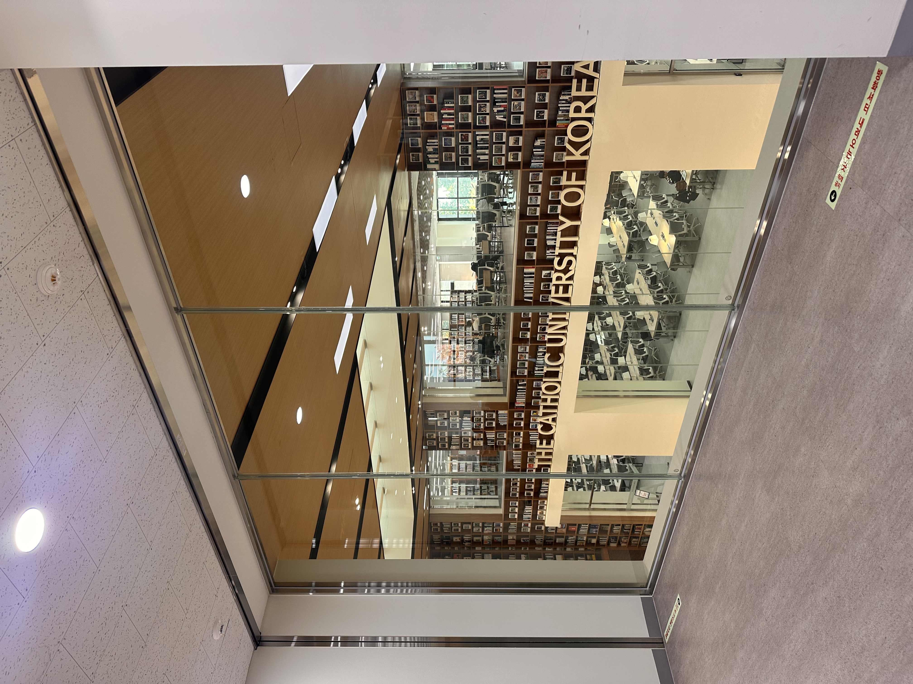
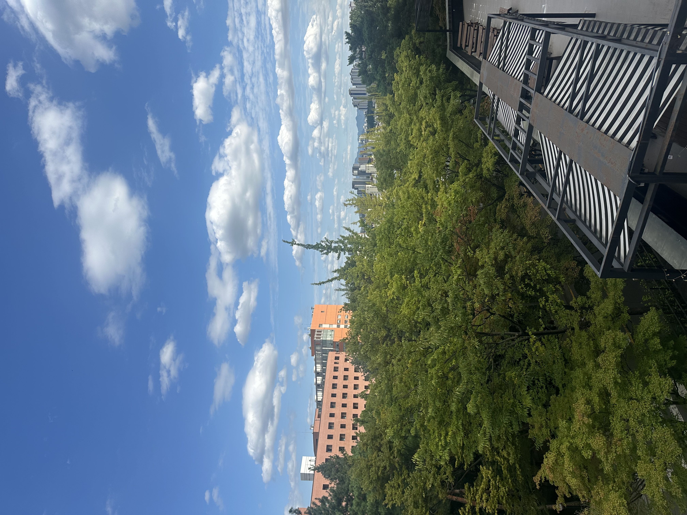
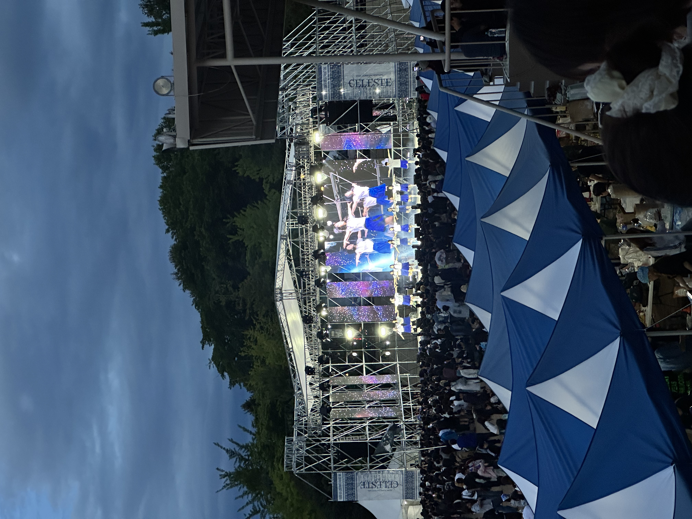

1. 중앙 도서관

조용히 공부하기에 완벽한 구석 자리인데, 매 학기 기말고사 기간에는 자리를 잡기가 어렵습니다.
2.B333

이곳은 배움의 공간이자 매주 수업이 열리는 곳이기도 합니다.
3. 운동장

저녁에 사람들이 축구를 하는 그 장소는 연례 학교 개교기념일 행사 때 가장 활기 넘치는 곳이기도 합니다.
권장 투어 순서
B333👉운동장👉중앙 도서관
Location Buttons and Google Map
After selecting a location, the description and map marker will update simultaneously
Central Library
A quiet place for reading books
Classroom
A quiet place for studying
Sports Field
A space to relax and exercise
This is a search map for practice. For your assignment, use "Share → Embed map" after finding the actual location.
저자 : 량완치